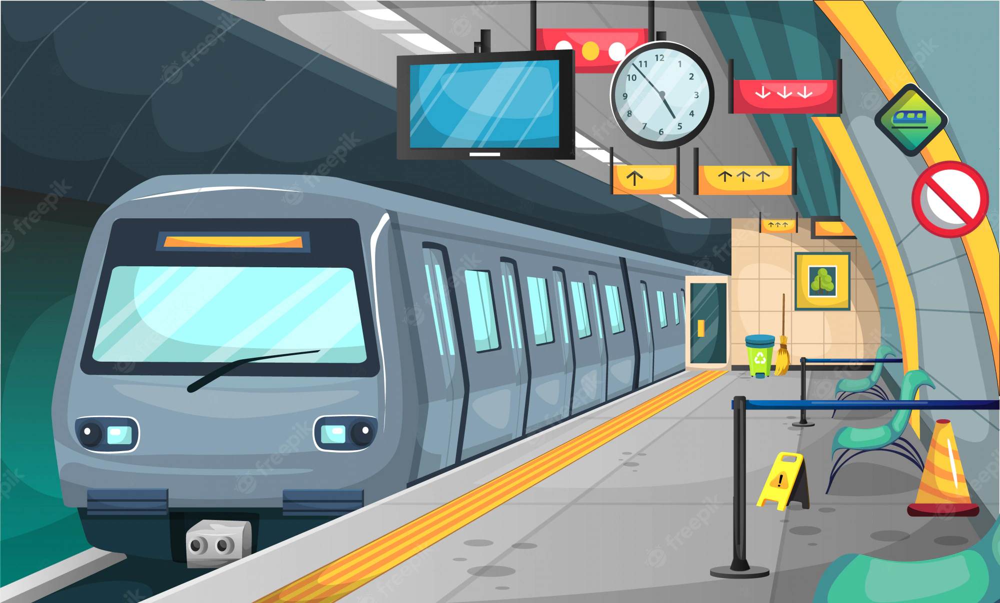
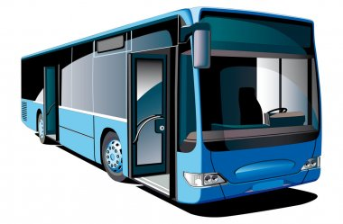
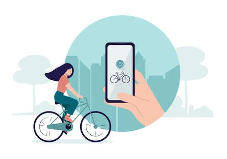

In città
La metro
Se la città è abbastanza grande, avrà porbabilmente una metro. Per potervi accedere, bisognerà comprare il ticket o, per i clienti più assidui un pass una carta simile alla carta di credito con un numero illimitati di accessi su un periodo di tempo.
I trasporti sono gestiti di solito da una compangia, che cambia da citt` a città. A parigi si chiama RATP, a Rennes si chiama Star e così via. Una volta finita la tua tratta, non gettare il biglietto ! Di solito il biglietto preso per la metro sar` valido anche per il bus o per per il tram.


I bus
Tutte le città dispongono di un servizio di autobus. In Francia costituiscono un servizio puntale e abbastanza affidabile. Ciò nonostante sono pur sempre in balia del traffico stradale, quindi gli imprevisti capitano più spesso che con la metro! Anche qui fate attenzione : il biglietto per il bus è di solito valido anche per Metro, e altri tipo di trasporto.
Bikesharing e monopattini elettrici
. Sono mezzi di trasporto disponibili in quasi tutte le città che dispongono di una soluzione di trasporto dolce, ovvero che non comporti l'uso di combustibili fossili.Il più comune è il bikesharing : consiste in delle bici, elettriche o meno, messe a disposizione in delle stazioni dedicate ad un prezzo generalemente basso (qualche euro al massimo).
A questo, si sono aggiunti i monopattini (trotinette in francese) gestiti in generale da compagnie private. Tra queste ne citiamo alcune : Lime, Bird, Dott, Tier. Queste soluzioni sono di solito più care, ma la qualità è spesso migliore.
